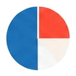

ブログ
当サイトが公式ページを読んだ自治体の制度270件のうち、対象外の経費が書かれた180件を集計。消費税・汎用品・親族への支払・家賃など、対象外になりやすい経費の件数と、同じ経費が制度で逆になる例を整理します。
この記事のポイント
- 対象外の経費を公式ページに書く制度は270件中180件で、そのうち消費税は47件、パソコン等の汎用品は22件が挙げている
- 家賃は対象経費に入れる制度が32件ある一方で12件は対象外にしており、制度によって逆になる
- 経費の欄が空の制度は90件あるが、書かれていないことは何でも対象という意味ではない
はじめに
結論から言うと、自治体の補助金で「対象外」として名前が挙がりやすい経費は、消費税（47件）・パソコンなどの汎用品（22件）・交付決定前に始めた事業の経費（19件）・振込などの手数料（17件）です。しかも家賃のように、ある制度では対象経費、別の制度では対象外という経費もあります。「前に使った補助金で認められたから、今回も大丈夫」は通りません。
この記事は、当サイトの制度ガイドの元データ（data/program-details.json。公式ページの本文から読み取った事実を、2026年10月17〜18日に確認したもの）を数え直したものです。全国の自治体制度の全数ではなく、当サイトが優先して公式ページを読んだ270件の集計です。


どのデータを、どう数えたか- 対象は、公式ページから内容を読み取れた自治体の制度270件です。
- このうち「対象外の経費・条件」の欄に記載があるのは180件（67%）、欄が空なのは90件です。1件あたりの記載数は、中央値が3項目、最大は8項目でした。
- 「対象経費」の欄に記載があるのは246件です。
- 数え方は、欄の文章に決まった語句（「消費税」「パソコン」「家賃・賃借・賃料」など）が含まれるかどうかです。同じ制度が複数の行に入ることがあります。
- 「対象外」の欄には、経費だけでなく、対象にならない事業や人の条件も入っています。語句で数えているため、文脈の読み違いが少数あり得ます。
同じ元データを別の切り口で数えた記事に、注意書きの集計と必要書類の集計があります。この記事は、そのうち「どの経費が対象外か」だけを細かく見ます。

 対象外として挙がる経費の件数
対象外として挙がる経費の件数
対象外の記載がある180件を母数にした件数です。
| 対象外に挙がる経費・条件 | 件数 | 180件に占める割合 |
|---|---|---|
| 消費税・地方消費税 | 47 | 26% |
| パソコン・タブレットなどの汎用品 | 22 | 12% |
| 交付決定前に着手・発注した経費 | 19 | 11% |
| 振込手数料・決済手数料などの手数料 | 17 | 9% |
| 自社・親族・関係会社・代表者・役員への支払 | 18 | 10% |
| 家賃・賃借料 | 12 | 7% |
| 他の補助金と重複する経費 | 11 | 6% |
| 土地・建物の取得 | 9 | 5% |
| 光熱水費 | 8 | 4% |
| 中古品 | 7 | 4% |
| 飲食・接待・交際 | 7 | 4% |
| 自動車・車両 | 6 | 3% |
（集計日：2026年11月7日。元データの確認日は2026年10月17〜18日）
どう読むか
消費税は4件に1件です。公式ページには「消費税及び地方消費税として支出する費用」のように書かれています。補助率が2分の1でも、計算の元になるのは税抜きの金額です。見積書を取るときは、税込みと税抜きを分けて書いてもらいましょう。
汎用品は、たとえば「ハードウェア単体での申請（パソコンやタブレット等は、ソフトウェアと組み合わせて専ら事業に使用する場合に限り対象）」と書く制度があります。一方で「一般的な生活家電・生活雑貨・パソコン・タブレット等汎用性のある機械器具（原則）」を対象外とする制度もあります。「パソコンは出ない」と決めつけるのではなく、条件つきで認める制度があるかどうかを、公式ページで見ます。
交付決定前の着手は、「補助金の交付決定前に発注や契約を締結した経費及び支出済みの経費」のような書き方です。先に発注してしまうと、あとで取り消せません。ここは19件ですが、別の集計（注意書き全体）ではもっと多くの制度が触れています。申請の流れは補助金の申請の流れで確認できます。
自社・親族・関係会社への支払は、「関連会社や家族・親族が経営する会社への発注」「補助対象者又は3親等以内の親族に支払う家賃」といった形で出てきます。取引先を選ぶ段階で、資本関係と親族関係を確かめておきます。

同じ経費が、制度によって逆になる
次の表は、同じ語句が「対象経費」の欄に出る制度の数と、「対象外」の欄に出る制度の数を並べたものです。
| 経費 | 対象経費の欄にある制度 | 対象外の欄にある制度 | 両方に出る制度 |
|---|---|---|---|
| 家賃・賃借料 | 32 | 12 | 6 |
| パソコン・タブレット・汎用品 | 7 | 22 | 2 |
| 人件費 | 10 | 3 | 1 |
| 自動車・車両 | 5 | 6 | 1 |
| 光熱水費 | 6 | 8 | 0 |
| リース | 9 | 6 | 0 |
| 中古品 | 2 | 7 | 0 |
| 土地・建物の取得 | 3 | 9 | 0 |
どう読むか
家賃を見ると、32件が対象経費に入れ、12件が対象外にしています。そのうち6件は、同じ制度の中で、一部だけ対象にして一部を対象外にしている書き方です。たとえば次のような例があります。
- 「事業所賃借料のうち、敷金・礼金・駐車場費・光熱水費・共益費等、賃借料の支払い先が創業者本人や親族である場合」は対象外（家賃本体は対象になり得る）
- 「建物賃借料のうち、敷金、礼金、保証金、権利金、不動産仲介手数料その他直接事務所の賃借に要しない経費及び消費税額」は対象外
- 「家賃、光熱水費」をひとまとめに対象外にする制度もある
つまり「家賃は出るか」という問いの答えは、家賃のうち何が、誰に払う場合に出るかまで読まないと決まりません。同じことは人件費、リース、車両にも言えます。人件費は10件が対象に入れ、3件が対象外にしています。リースは9件が対象、6件が対象外です。
逆に、中古品（対象経費2件・対象外7件）や土地・建物の取得（対象経費3件・対象外9件）は、対象外にする制度のほうがはっきり多くなっています。

「対象外の欄が空」は、安全という意味ではない
対象外の欄が空の制度は、270件のうち90件（33%）です。これは、公式ページに対象外の経費の記載が見つからなかったということです。どんな経費でも認められるという意味ではありません。要綱や募集要項の別紙にだけ書いてあり、ページ本文には出ていないことがあります。
経費に迷ったときは、次の順で確かめます。
- 制度の公式ページの「対象経費」「対象外」の欄を読む
- 要綱・募集要項（PDF）の別表を開く
- 載っていなければ、買う前・契約する前に窓口へ電話で聞き、聞いた日と担当部署をメモする

 申請前のチェックリスト
申請前のチェックリスト
- 見積書は、税込みと税抜きを分けて書いてもらった
- 発注・契約・支払いは、交付決定のあとにすると決めた
- パソコンやタブレットを買うなら、その制度が「ソフトと組み合わせて専ら事業に使う場合のみ」などの条件つきで認めているかを読んだ
- 家賃は、敷金・礼金・共益費・仲介手数料が対象外か、支払い先が親族ではないかを確かめた
- 取引先が、自社・親族・関係会社ではない
- ほかの補助金と、同じ経費で重複して申請していない

注意
この記事は、当サイトが公式ページから読み取った制度の集計と、その読み方をまとめた参考情報です。採択や受給を保証するものではありません。 経費の区分は、制度・公募回・年度で変わります。必ず、申請する制度の公式ページと要綱・募集要項で確認してください。

次に読むとよいページ
- 補助金の「対象経費」と「対象外経費」の考え方：集計の前に、見分け方の基本を確認できる解説です。
- 自治体の制度ガイド一覧：公式ページを読み取った制度の、対象経費・対象外・必要書類を1件ずつ確認できます。
- 補助金を探す：地域と目的で制度を絞り込み、公式ページへ進めます。
出典：当サイト data/program-details.json（自治体の公式ページの本文から読み取った事実。確認日 2026年10月17〜18日）。集計日 2026年11月7日。
最終更新日：2026年11月7日